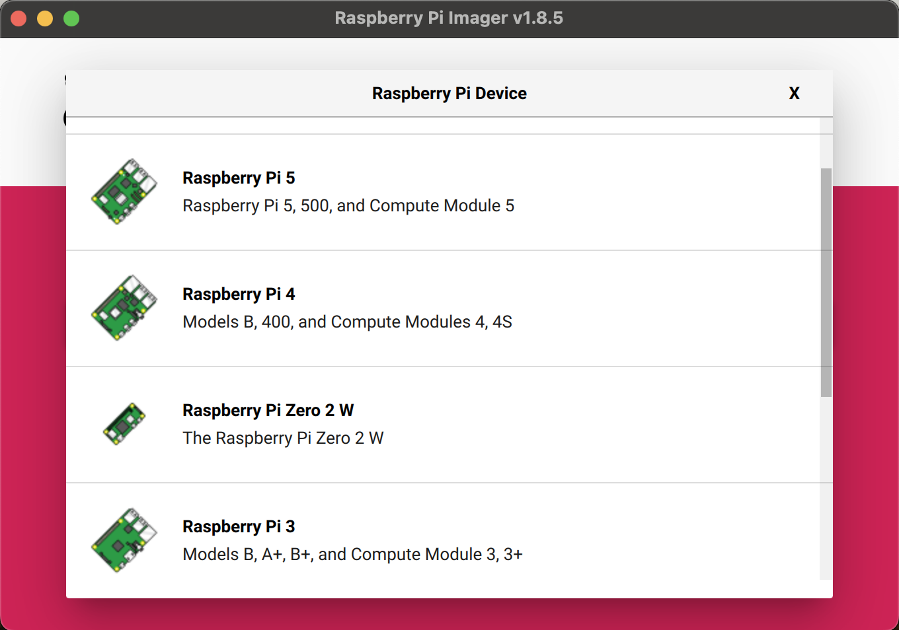
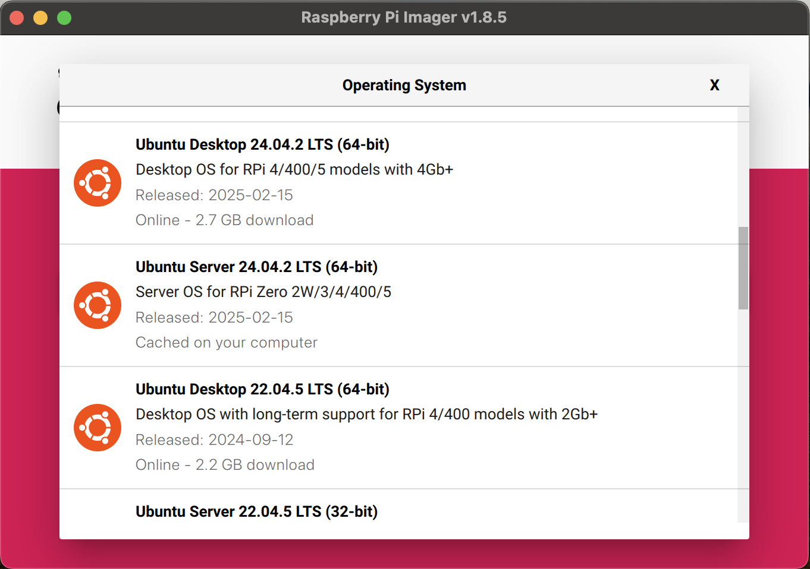
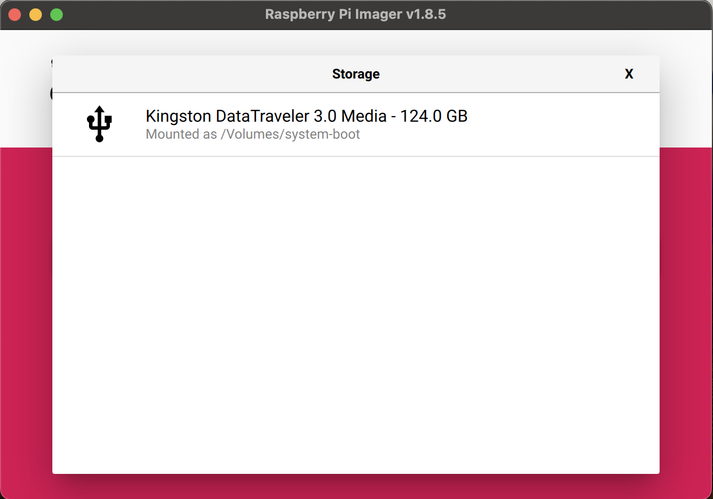
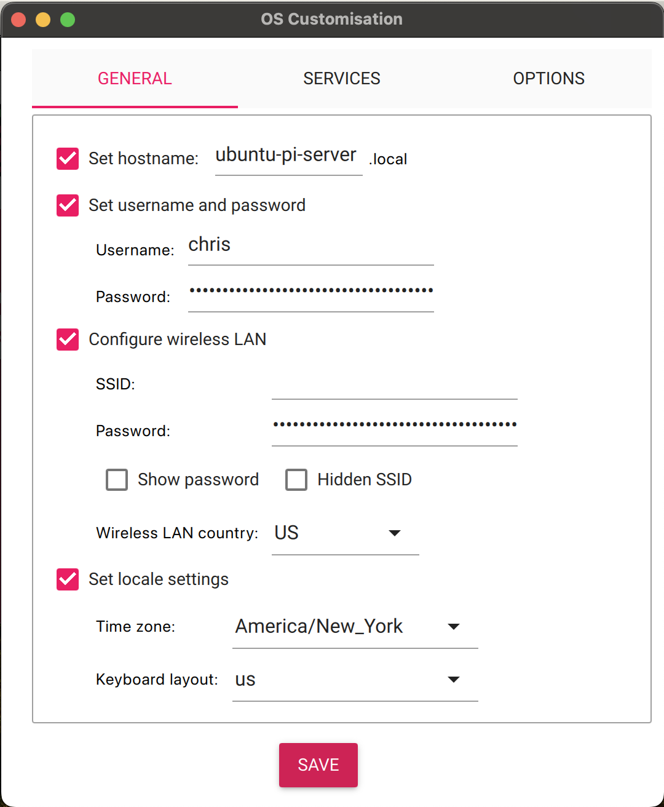
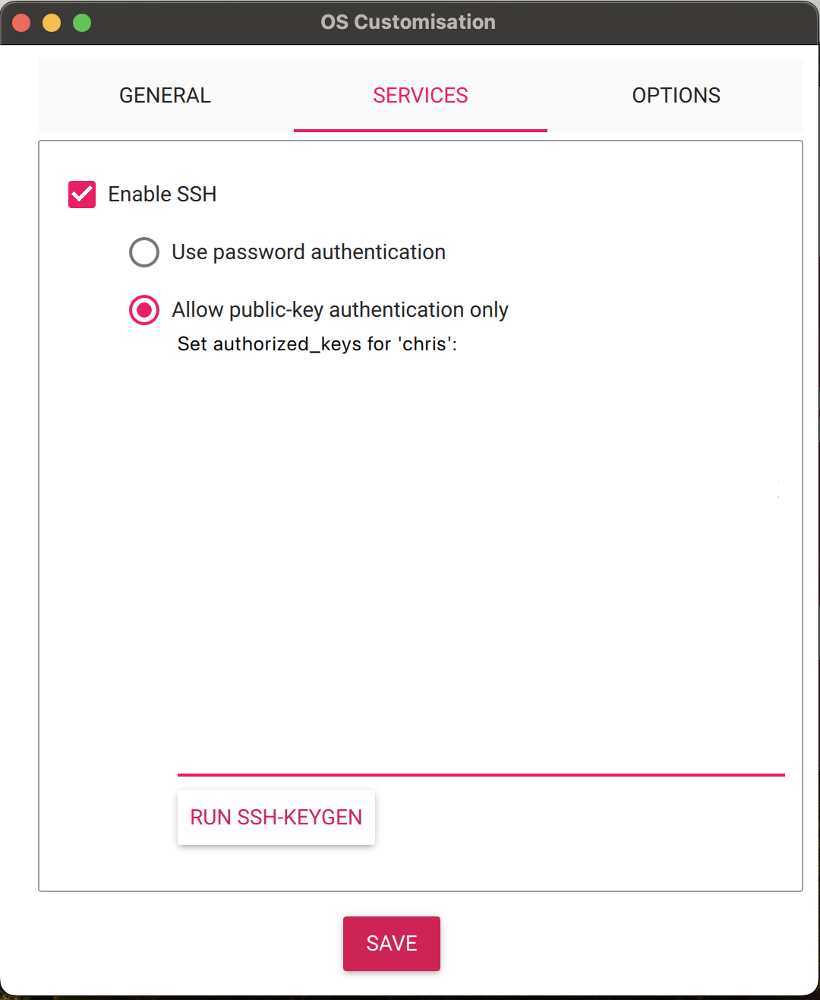
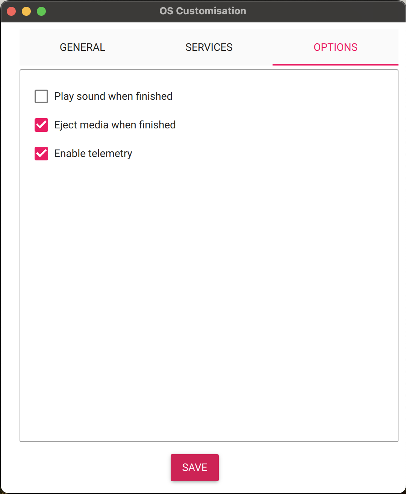

Guide to Setting Up Raspberry Pi for Data Engineering and Virtualization Projects
Introduction
I used a combination of ChatGPT and Claude to create an outline and then detailed guides for each step, respectively. In my experience, Claude handles the detailed guides and explanations better, but I still make sure to check, test, and proofread everything it gives me.
This guide provides step-by-step instructions and explanations for configuring a Raspberry Pi 4 to learn about hardware, servers, containerization, and self-hosting principles. Eventually, I’d like to setup an actual server cluster and self-host some interesting, more resource-intensive applications. Before I make that kind of commitment, I wanted to learn the basics and see if this is something I would enjoy– the good news, I learned I do. The great news, Raspberry Pi makes their hardware very affordable and easy to purchase. Here’s the official webpage for the exact computer I bought.
It’s worth adding, I bought the 8GB Raspberry Pi 4. The price difference isn’t that great, but the performance is between the lesser 2GB and 4GB models. Additionally, because I’m planning to host and experiment with CI/CD, I also bought a case and cooling fan to help with longevity. All in, the base price for that (with the power supply and HDMI cable) is $107.30 before taxes, shipping, and other fees.
Starting from (close) to Zero
Hardware Requirements
This section will provide basic setup instructions, so you’ll have the same tools I do and can follow along with this guide, step-by-step.
- Raspberry Pi 4 8GB
- Micro HDMI to HDMI cord (for direct access)
- Appropriate Power Supply
- Keyboard (connected via USB for direct access)
- 1TB Samsung T7 SSD (connected via USB for boot media/core memory)
- Amazon Basics 128GB microSD card (or other microSD cards for backups media)
- SSH-capable devices for headless access
- I’m using a MacBook Air
- I prefer the MacOS and Terminal for personal development, because I use Windows at my day job
Image requirements
Once you have your hardware ready to go, you can being setting up the software. I’m using Linux Server LTS because it’s a stable version of Linux intended for headless, server environments. LTS means long-term support, so unlike the more frequently updated versions, these OS versions are supported for 5 years. Additionally, you’ll want to use public-key authentication for better security purposes, but more on that in the SSH Section.
Have your SSD ready and able to connect to your laptop or desktop (whichever you plan to use with SSH)
Download Raspberry Pi Imager from the official website
Run the Imager and configure your installation of the most recent Linux Server LTS image
- Select your Raspberry Pi device

- Select the OS Image you want to flash

- Select the media storage device for the image

- Configure settings
 Here, you’ll configure your primary user ID and password; network connection; locale and timezone; and your hostname (the nickname your computer remembers the IP address as).
 Here, you’ll configure your SSH settings. Remember to use public-key authentication only, and to keep the private key generated on your local machine safe.
 These are more preference based, but it’s nice to have the storage device automatically eject once the flashing is complete. Then, you just need to unplug it and plug it into your Raspberry Pi to get going.
Initial Boot
Now you’re ready to plug your boot media device (the SSD) into your Raspberry Pi. You can also connect a keyboard, monitor, and power supply. Once all of this is connected, your Raspberry Pi will boot up. Connecting a monitor and keyboard will allow your to directly interact with the system’s terminal. Ideally, you’ll use SSH, but it may be helpful to have direct access in case there are any network issues.
Next we’ll cover the basic structure of the Linux Server OS as well as go over some basic network connectivity and configurations.
Networking Basics
This section provides a brief example of how to connect your server to WiFi. It assumes you are using just the basics, but I’ll also provide an exmaple for
Quick Background
Connecting to WiFi
SSH
This section provides a thorough walkthrough of setting up and securing SSH (Secure Shell) on a Raspberry Pi running Ubuntu Server. SSH is a network protocol that creates an encrypted tunnel between computers, allowing secure remote management. Think of it as establishing a private, secure telephone line that only authorized parties can use to communicate.
Understanding SSH Configuration Files
Before diving into the setup, it’s important to understand the key configuration files:
SSH Client vs Server Configuration
The SSH system uses two main configuration files with distinct purposes:
ssh_config:- Lives on your client machine (like your laptop)
- Controls how your system behaves when connecting to other SSH servers
- Affects outgoing SSH connections
- Located at
/etc/ssh/ssh_config(system-wide) and~/.ssh/config(user-specific)- If your server ever moves or connects to a new IP address, simply update it in the user config file
sshd_config:- Lives on your server (the Raspberry Pi)
- Controls how your SSH server accepts incoming connections
- Determines who can connect and how
- Located at
/etc/ssh/sshd_config - Requires root privileges to modify
- Changes require restarting the SSH service
Key-Based Authentication Setup
Understanding SSH Keys and Security
This guide uses ECDSA-384 keys, which offer several advantages:
- Uses the NIST P-384 curve, providing security equivalent to 192-bit symmetric encryption
- Better resistance to potential quantum computing attacks compared to smaller key sizes
- Standardized under FIPS 186-4
- Excellent balance between security and performance
Generating Your SSH Keys
On your laptop, generate a new SSH key pair:
# Generate a new SSH key pair using ECDSA-384
ssh-keygen -t ecdsa -b 384 -C "ubuntu-pi-server"This command:
-t ecdsa: Specifies the ECDSA algorithm-b 384: Sets the key size to 384 bits-C "ubuntu-pi-server": Adds a descriptive comment
The command generates two files:
~/.ssh/id_ecdsa: Your private key (keep this secret!)~/.ssh/id_ecdsa.pub: Your public key (safe to share)
Installing Your Public Key on the Raspberry Pi
Transfer your public key to the Pi:
ssh-copy-id -i ~/.ssh/id_ecdsa.pub chris@ubuntu-pi-serverThis command:
- Connects to your Pi using password authentication
- If you’re restoring your config, you’ll need to temporarily set PasswordAuthentication in
/etc/ssh/sshd_configto yes
- If you’re restoring your config, you’ll need to temporarily set PasswordAuthentication in
- Creates the
.sshdirectory if needed - Adds your public key to
authorized_keys - Sets appropriate permissions automatically
Server-Side SSH Configuration
Understanding Server Host Keys
Your Pi’s /etc/ssh directory contains several important files: - Host key pairs (public and private) for different algorithms - Configuration files and directories - The moduli file for key exchange
Optimizing Server Security
- Back up the original configuration:
sudo cp /etc/ssh/sshd_config /etc/ssh/sshd_config.backup-$(date +%Y%m%d)- Optimize host key settings in sshd_config:
# Specify host key order (prioritize ECDSA)
HostKey /etc/ssh/ssh_host_ecdsa_key
HostKey /etc/ssh/ssh_host_ed25519_key
HostKey /etc/ssh/ssh_host_rsa_key- Strengthen the moduli file:
# Back up the existing file
sudo cp /etc/ssh/moduli /etc/ssh/moduli.backup
# Remove moduli less than 3072 bits
sudo awk '$5 >= 3072' /etc/ssh/moduli > /tmp/moduli
sudo mv /tmp/moduli /etc/ssh/moduli- Apply changes:
# Test the configuration
sudo sshd -t
# Restart the SSH service (on Ubuntu Server)
sudo systemctl restart ssh
# Verify the service status
sudo systemctl status sshJust note, you’ll probably need to reboot (sudo reboot) your server before all of the changes fully take place. Once you’ve done that, you may need to run sudo systemctl start ssh.
Client-Side Configuration
Setting Up Your SSH Config
Create or edit ~/.ssh/config on your laptop:
Host ubuntu-pi-server
HostName ubuntu-pi-server
User chris
IdentityFile ~/.ssh/id_ecdsa
Port 22If your ssh isn’t picking up on the ~/.ssh/ssh_config then you might need to specify it in the system config. Find the line in /etc/ssh/ssh_config that says Include and add the absolute file path. If you need to include more than your user specific config, such as the default /etc/ssh/ssh_config.d/* just add that absolute path separated by a space from any other path included.
Managing Known Hosts
- Back up your current known_hosts file:
cp ~/.ssh/known_hosts ~/.ssh/known_hosts.backup- View current entries:
ssh-keygen -l -f ~/.ssh/known_hosts- Remove old entries:
# Remove specific host
ssh-keygen -R ubuntu-pi-server- Hash your known_hosts file for security:
ssh-keygen -H -f ~/.ssh/known_hostsSecuring the Key File
When using SSH key-based authentication, adding a password to your key enhances security by requiring a passphrase to use the key. This guide explains how to add and remove a password from an existing SSH key.
Adding a Password to an SSH Key
If you already have an SSH key and want to add a password to it, use the following command:
ssh-keygen -p -f ~/.ssh/id_rsaExplanation:
-p : Prompts for changing the passphrase.
-f ~/.ssh/id_rsa : Specifies the key file to modify (adjust if your key has a different name).
You will be asked for the current passphrase (leave blank if none) and then set a new passphrase.Removing a Password from an SSH Key
If you want to remove the passphrase from an SSH key, run:
ssh-keygen -p -f ~/.ssh/id_rsa -N ""Explanation:
-N "" : Sets an empty passphrase (removes the password).
The tool will ask for the current passphrase before removing it.Verifying the Changes
After modifying the key, test the SSH connection from your CLI, or using an SSH tunnel.
ssh -i ~/.ssh/id_rsa user@your-serverIf you added a passphrase, you’ll be prompted to enter it when connecting.
By using a passphrase, your SSH key is protected against unauthorized use in case it gets compromised. If you frequently use your SSH key, consider using an SSH agent (ssh-agent) to cache your passphrase securely.
Additional Security Measures
Firewall Configuration
# Install UFW (if it isn't already)
sudo apt install ufw
# Allow SSH connections
sudo ufw allow ssh
# Enable the firewall
sudo ufw enableNow, you’ll want to add rules for example, allowing traffic on a specific port if you took the step to choose a nonstandard, one that isn’t the default Port 22.
# Add a new rule in the port/protocol format
sudo ufw add 6025/tcp
# See a list of all rules
sudo ufw status numbered
# Remove the default rules
sudo ufw delete 1Fail2Ban
Fail2Ban is a security tool designed to protect servers from brute force attacks. It works by monitoring log files for specified patterns, identifying suspicious activity (like multiple failed login attempts), and banning the offending IP addresses using firewall rules for a set period. It’s especially useful for securing SSH, FTP, and web services.
The best part is the project is entirely open source, you can view the source code and contribute here.
# Install Fail2Ban
sudo apt update
sudo apt install fail2ban
# Start and enable Fail2Ban
sudo systemctl start fail2ban
sudo systemctl enable fail2banSystem Updates
Keep your system updated:
sudo apt update && sudo apt upgradeMonitoring and Maintenance
Regular Security Checks
- Monitor SSH login attempts:
sudo journalctl -u ssh- Check authentication logs:
sudo tail -f /var/log/auth.logKey Management Best Practices
- Protect your private key:
- Use a strong passphrase
- Never share or copy to unsecured devices
- Keep secure backups
- Verify file permissions:
# On your laptop
chmod 700 ~/.ssh
chmod 600 ~/.ssh/id_ecdsa
chmod 644 ~/.ssh/id_ecdsa.pub
# On your Pi
chmod 700 ~/.ssh
chmod 600 ~/.ssh/authorized_keysTroubleshooting
If you can’t connect:
- Verify SSH service status:
sudo systemctl status ssh- Check SSH connectivity:
# Test SSH connection verbosely
ssh -v chris@ubuntu-pi-server- Verify host key fingerprints:
# On the Pi
ssh-keygen -l -f /etc/ssh/ssh_host_ecdsa_key.pubRemember: When you see a host key verification prompt, always verify the fingerprint matches your server’s key before accepting.
Using SCP to Transfer Scripts
This section outlines the process of securely copying Bash scripts from an Ubuntu Pi Server to a MacBook Air using SCP (Secure Copy Protocol), a file transfer tool built on top of SSH. The user should have an SSH configuration file (~/.ssh/config) set up to simplify connections to their Raspberry Pi server.
For a few basic scripts, SCP is fine, but for larger file transfers rsync is better suited and a more efficient solution.
Ensure the SSH Configuration Works
Initially, the ssh ubuntu-pi-server command did not use the expected user-specific SSH configuration (~/.ssh/config). Instead, it defaulted to the system-wide configuration (/etc/ssh/ssh_config).To fix this, I ran the command with the -F flag explicitly specifying the user config:
ssh -F ~/.ssh/config ubuntu-pi-serverNote: To make sure SSH always uses the correct config, I tried the following:
- Made sure
~/.ssh/configexists and has the correct permissions (chmod 600 ~/.ssh/config). - Modified the
/etc/ssh/ssh_configto include the user config:
Include ~/.ssh/configAfter fixing the issue, the command ssh ubuntu-pi-server worked as expected.
Copying Scripts from Server to MacBook Air
Once SSH was working correctly, the next step was to copy two Bash scripts from the Ubuntu Pi Server to the MacBook Air using scp.
The scripts were stored on the Pi as:
/home/chris/scripts/system_backup.sh
/home/chris/scripts/config_backup.shThe following scp commands were used to transfer them to the MacBook Air:
scp ubuntu-pi-server:~/scripts/backup.sh ~/Documents/pi-scripts/
scp ubuntu-pi-server:~/scripts/maintenance.sh ~/Documents/pi-scripts/Copying Multiple Files at Once
To copy all Bash scripts from the scripts directory in one command:
scp chris@ubuntu-pi-server:~/mnt/backups/ ~/Documents/pi-scripts/backupsCopying Files from MacBook Air to Server
Simply enter the command in reverse, but notice here I did things a little differently.
-rtellsscpto recursively copy a directory, meaning it moves it and all of its contentschris@tellsscpto specify the user when connecting to the server, this can be helpful if you have connection issues
scp -r ~/Documents/pi-scripts chris@ubuntu-pi-server:~/scriptsSCP Notes
- SSH is now correctly configured and working using
ssh ubuntu-pi-server. - Bash scripts can be securely copied from the Ubuntu Pi Server to the MacBook Air using
scp.- Just take note of the specific syntax used, namely
server-name:path/to/files
- Just take note of the specific syntax used, namely
- The user can now maintain local backups of important scripts efficiently.
- Enables you to develop where you’d like and then easily move files to test scripts
Conclusion
This configuration provides a robust, secure SSH setup for your Raspberry Pi. It uses modern cryptography (ECDSA-384) while maintaining compatibility with other systems. Regular monitoring and maintenance will help ensure your server remains secure.
Remember to keep your private keys secure and regularly update your system. If you need to make changes to the SSH configuration, always test them before disconnecting from your current session to avoid being locked out.
Partitions and Backups
Why Partition the SSD?
- Organize storage for multiple OS installations or shared data.
- Separate OS environments and workloads.
Steps to Partition the SSD
Install Partitioning Tools:
sudo apt update && sudo apt install gpartedCreate Partitions:
- Open
gpartedand select your SSD. - Create the following partitions:
- Partition 1: Linux root (e.g., 100GB, ext4).
- Partition 2: NetBSD or another OS (e.g., 100GB, FFS).
- Partition 3: Shared storage (remaining space, ext4 or exFAT).
- Open
Mount Partitions:
Add entries to
/etc/fstabfor automatic mounting during boot. Replacexxxx-xxxxwith your partition’s UUID, which can be found usinglsblk -f:UUID=xxxx-xxxx /mnt/shared ext4 defaults 0 2Save and exit the file, then run:
sudo mount -aVerify the partitions are mounted correctly with:
df -h
System Backups and Upgrades
Partitions
Before diving into the actual backup process for your server, it’s best to figure out your storage media and partition your drives. Partitions are just logicial divisions in your physical storage, each of which can use different filesystems. With some examples below:
ext4: Standard Linux filesystemFAT32: Compatible with most systems but limited to 4GB filesexFAT: Enhanced FAT, good for cross-platform useNTFS: Windows filesystem, readable by Linux
Partitioning Tools
Before you can partition your hard drive or another piece of physical storage (like a microSD), you’ll need to be connected to your boot media. In my case, that’s the 1TB SSD I have plugged into my server. You are not able to partition the active storage device on any server or computer.
So, your first step is to take a look at the block devices available to you.
sudo lsblkComprehensive Linux Configuration Backup Guide for Raspberry Pi Server
This guide explains how to create a complete backup of Linux configurations and system files on a Raspberry Pi Server running Ubuntu Server LTS using rsync. We’ll use rsync because it provides several important advantages over simple copy commands:
- Incremental backups that only transfer changed files
- Preservation of file permissions, ownership, and timestamps
- Built-in compression for efficient transfers
- Detailed progress information and logging
- The ability to resume interrupted transfers
Prerequisites
- Raspberry Pi Server running Ubuntu Server LTS
- Physical keyboard access
- Root or sudo privileges
- Mounted backup drive at
/mnt/backups/ - rsync (typically pre-installed on Ubuntu Server)
Setting Up the Backup Directory
First, we’ll prepare the backup directory structure and set appropriate permissions:
# Create backup directories if they don't exist
sudo mkdir -p /mnt/backups/configs
sudo mkdir -p /mnt/backups/system
# Change ownership to your user (replace 'chris' with your username)
sudo chown -R chris:chris /mnt/backups
# Set appropriate permissions
sudo chmod -R 700 /mnt/backups # Only owner can read/write/executeConfiguration Files Backup
We’ll use rsync to create a structured backup of essential configuration files. The following script demonstrates how to perform the backup while preserving all file attributes:
#!/bin/bash
# Using the {} around DATEYMD in the file path ensure it's specified as the variable's value, and the subsequent parts are not included
DATEYMD=$(date +%Y%m%d)
BACKUP_DIR="/mnt/backups/configs/$DATEYMD"
LOG_DIR="/mnt/backups/logs"
LOG_FILE="$LOG_DIR/${DATEYMD}_config_backup.log"
# Create backup directory
mkdir -p "$BACKUP_DIR"
{
# 1. User and Group Information
sudo rsync -aAXv /etc/passwd "$BACKUP_DIR/passwd.bak"
sudo rsync -aAXv /etc/group "$BACKUP_DIR/group.bak"
sudo rsync -aAXv /etc/shadow "$BACKUP_DIR/shadow.bak"
sudo rsync -aAXv /etc/gshadow "$BACKUP_DIR/gshadow.bak"
# 2. Crontab Configurations
sudo rsync -aAXv /etc/crontab "$BACKUP_DIR/"
sudo rsync -aAXv /var/spool/cron/crontabs/. "$BACKUP_DIR/crontabs/"
# 3. SSH Configuration
sudo rsync -aAXv /etc/ssh/. "$BACKUP_DIR/ssh/"
sudo rsync -aAXv ~/.ssh/. "$BACKUP_DIR/user_ssh/"
# 4. UFW (Uncomplicated Firewall) Configuration
sudo rsync -aAXv /etc/ufw/. "$BACKUP_DIR/ufw/"
sudo ufw status verbose > "$BACKUP_DIR/ufw_rules.txt"
# 5. Fail2Ban Configuration
sudo rsync -aAXv /etc/fail2ban/. "$BACKUP_DIR/fail2ban/"
# 6. Network Configuration
sudo rsync -aAXv /etc/network/. "$BACKUP_DIR/network/"
sudo rsync -aAXv /etc/netplan/. "$BACKUP_DIR/netplan/"
sudo rsync -aAXv /etc/NetworkManager/. "$BACKUP_DIR/NetworkManager/"
sudo rsync -aAXv /etc/hosts "$BACKUP_DIR/hosts.bak"
sudo rsync -aAXv /etc/hostname "$BACKUP_DIR/hostname.bak"
sudo rsync -aAXv /etc/resolv.conf "$BACKUP_DIR/resolv.conf.bak"
sudo rsync -aAXv /etc/wpa_supplicant/wpa_supplicant.conf "$BACKUP_DIR/wpa_supplicant.conf.bak"
# 7. Package Manager Configurations (apt)
sudo rsync -aAXv /etc/apt/. "$BACKUP_DIR/apt/"
# 8. Systemd Services and Timers
sudo rsync -aAXv /etc/systemd/system/. "$BACKUP_DIR/systemd/"
# 9. Logrotate Configuration
sudo rsync -aAXv /etc/logrotate.conf "$BACKUP_DIR/logrotate.conf.bak"
sudo rsync -aAXv /etc/logrotate.d/. "$BACKUP_DIR/logrotate.d/"
# 10. Timezone and Locale
sudo rsync -aAXv /etc/timezone "$BACKUP_DIR/timezone.bak"
sudo rsync -aAXv /etc/localtime "$BACKUP_DIR/localtime.bak"
sudo rsync -aAXv /etc/default/locale "$BACKUP_DIR/locale.bak"
# 11. Keyboard Configuration
sudo rsync -aAXv /etc/default/keyboard "$BACKUP_DIR/keyboard.bak"
# 12. Package List
dpkg --get-selections > "$BACKUP_DIR/package_list.txt"
# Set appropriate permissions
sudo chown -R chris:chris "$BACKUP_DIR"
sudo chmod -R 600 "$BACKUP_DIR"
echo "Configuration backup completed at: $BACKUP_DIR"
} > "$LOG_FILE" 2>&1
echo "Logs available at: $LOG_FILE"# Make the script executable
chmod +x /scripts/config_backup.shSystem Files Backup
For system files, we’ll create a separate rsync script that handles system directories efficiently:
#!/bin/bash
DATEYMD=$(date +%Y%m%d)
BACKUP_DIR="/mnt/backups/system/$DATEYMD"
LOG_DIR="/mnt/backups/logs"
LOG_FILE="$LOG_DIR/${DATEYMD}_system_backup.log"
# Create backup directory
mkdir -p "$BACKUP_DIR"
{
# Starting script
echo "Starting system backup at: $(date)"
echo "Backup directory: $BACKUP_DIR"
# The --one-file-system option prevents crossing filesystem boundaries
# --hard-links preserves hard links
# --acls and --xattrs preserve extended attributes
sudo rsync -aAXv --one-file-system --hard-links \
--exclude="/mnt/" \
/ "$BACKUP_DIR"
# 2. System Information Files
# Partition layout
sudo fdisk -l > "$BACKUP_DIR/partition_layout.txt"
# Disk UUIDs
sudo blkid > "$BACKUP_DIR/disk_uuids.txt"
# Set appropriate permissions
sudo chown -R chris:chris "$BACKUP_DIR"
sudo chmod -R 600 "$BACKUP_DIR"
echo "System backup completed at: $BACKUP_DIR."
} > "$LOG_FILE" 2>&1
echo "Logs available at: $LOG_FILE"# Make the script executable
chmod +x /scripts/system_backup.shUnderstanding the rsync Options
The rsync commands use several important options:
-a: Archive mode, preserves almost everything-A: Preserve ACLs (Access Control Lists)-X: Preserve extended attributes-v: Verbose output--one-file-system: Don’t cross filesystem boundaries--hard-links: Preserve hard links--exclude: Skip specified directories
Storing your backups externally
While it’s definitely beneficial to have a local copy of your backups to easily roll back changes, it isn’t the most secure solution to have all of your information in one place. So, how can you go about transferring your system and configuration backups to another storage system?
For the purpose of this guide, I’ll be showing you how to use rsync for a remote transfer and how to flash the backup onto a microSD.
Rsync for Remote Transfers
Rsync is specifically designed for copying and transferring files, so it offers more sophisticated file synchronization capabilities than basic tools like SCP.
rsync -avz --partial --progress --update chris@ubuntu-pi-server:/mnt/backups/system/master/ ~/Documents/raspberry_pi_server/backups/system/masterThe flags do the following:
-a: Archive mode, which preserves permissions, timestamps, symbolic links, etc.-v: Verbose output, showing what files are being transferred-z: Compress data during transfer for faster transmission--partial: Keep partially transferred files, allowing you to resume interrupted transfers--progress: Show progress during transfer--update: Skip files that are newer on the receiver (only transfer if source is newer)
Hardware Transfers
Note:
Everything up until this point has been tested and works– relatively efficiently for such a simple setup. That being said, I still haven’t tested the restore script, nor have I tried to setup simple cron jobs to automate and cleanup the backups.
Restoring from Backup
To restore your system from these backups:
Important Notes
- The
--deleteoption during restore will remove files at the destination that don’t exist in the backup. Use with caution. - Consider using rsync’s
--dry-runoption to test backups and restores without making changes. - The backup includes sensitive system files. Store it securely and restrict access.
- Consider encrypting the backup directory for additional security.
- Test the restore process in a safe environment before using in production.
Automating the Backup
Create a master backup script that runs both configuration and system backups:
# Create master backup script (save as master-backup.sh)
cat << 'EOF' > /mnt/backups/master-backup.sh
#!/bin/bash
# Set up logging
exec 1> >(logger -s -t $(basename $0)) 2>&1
# Run configuration backup
/mnt/backup/backup-configs.sh
# Run system backup
/mnt/backup/backup-system.sh
# Remove backups older than 30 days
find /mnt/backups/configs/ -type d -mtime +30 -exec rm -rf {} +
find /mnt/backups/system/ -type d -mtime +30 -exec rm -rf {} +
EOF
# Make the script executable
chmod +x /mnt/backup/master-backup.sh
# Add to crontab (run daily at 2 AM)
(crontab -l 2>/dev/null; echo "0 2 * * * /mnt/backup/master-backup.sh") | crontab -Troubleshooting
If you encounter issues:
- Check rsync error messages with
--verboseoption - Verify sufficient disk space with
df -h - Monitor backup progress with
--progressoption - Check system logs:
sudo journalctl -u cron - Verify file permissions and ownership
- Test network connectivity for remote backups
Remember to regularly verify your backups by checking the log files and occasionally testing the restore process in a safe environment.
2. Configuring MicroSD Cards
Purpose of MicroSD Cards
- Experiment with other OS installations (e.g., NetBSD).
- Use one card as a backup Linux bootloader.
- Allocate one card for portable environments or additional storage.
Steps to Use MicroSD Cards
- Format the Cards:
- Use
gpartedon Linux or similar tools to format the cards. - Choose
FAT32for compatibility orext4for Linux systems.
- Use
- Install Operating Systems:
- Download the desired OS images (e.g., NetBSD).
- Flash the image to the card using
balenaEtcherorRaspberry Pi Imager.
- Switching OS:
- Insert the appropriate microSD card and reboot the Raspberry Pi.